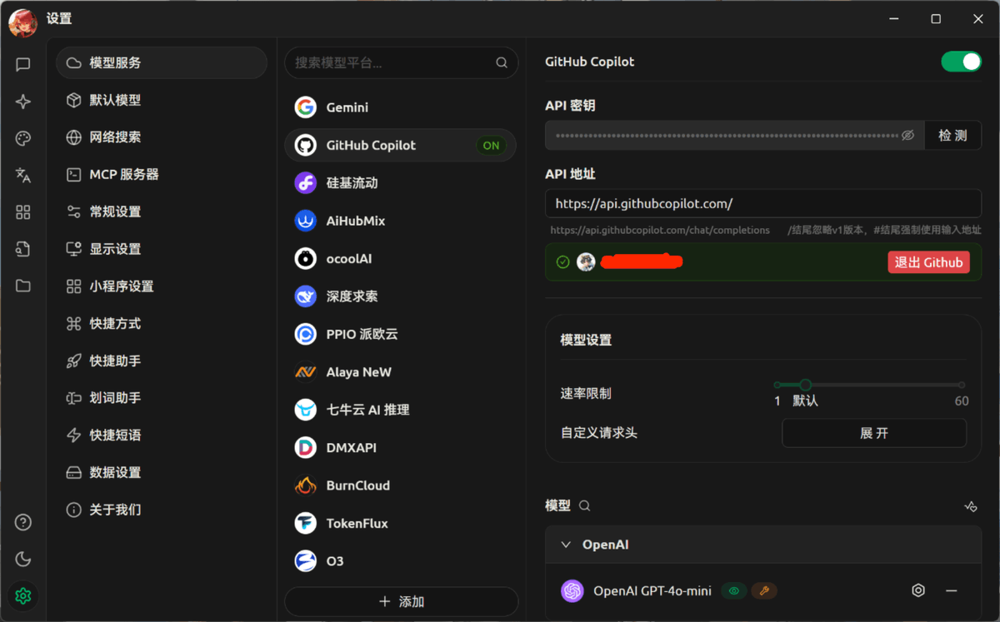
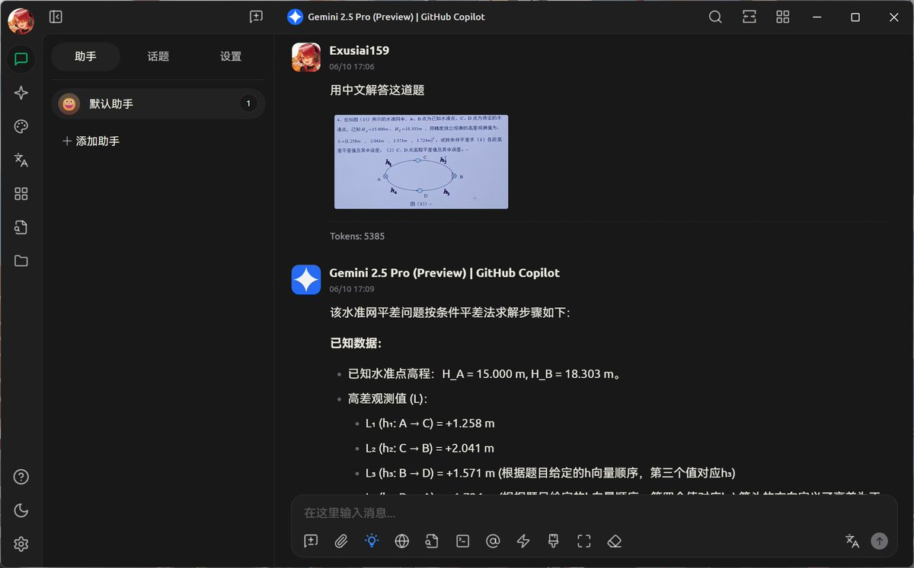
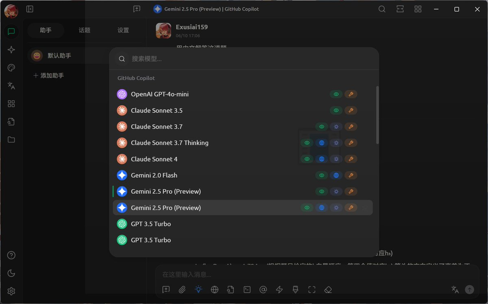

@Exusiai159 现在的copilot对除了gpt4.1以外的model是有每月免费用量限制的，而且yysy感觉还不算多（折合pro可以用300次sonnet4或者2.5pro），小心不要这里用爽了干正事的时候发现没用量了（x
https://t.co/edPT2T5XUv

https://t.co/edPT2T5XUv



舍友推荐了一个叫Cherry Studio的软件
把市面上几乎所有的大模型都集成了，不过需要自己手动填写API
正好我白嫖了Github Education，直接登录Github Copilot，可以用GPT、Claude和Gemini的付费模型
可惜没法输出LaTeX公式
还有其他玩法，等我探索探索 https://t.co/a4e4dHGIaf
把市面上几乎所有的大模型都集成了，不过需要自己手动填写API
正好我白嫖了Github Education，直接登录Github Copilot，可以用GPT、Claude和Gemini的付费模型
可惜没法输出LaTeX公式
还有其他玩法，等我探索探索 https://t.co/a4e4dHGIaf